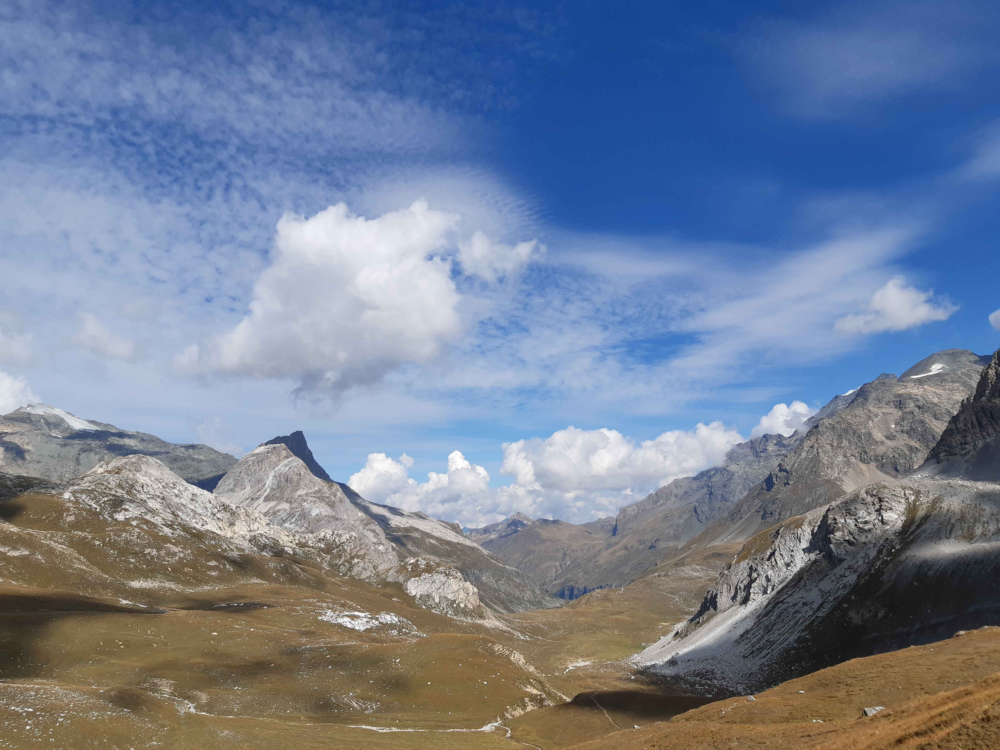
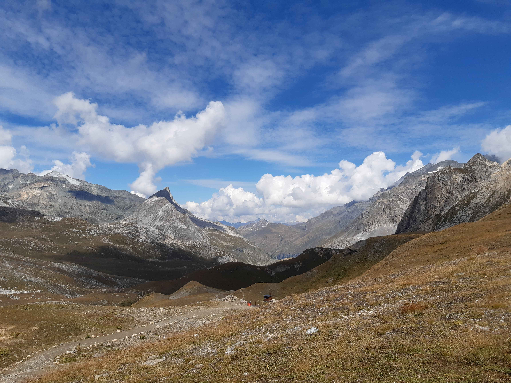
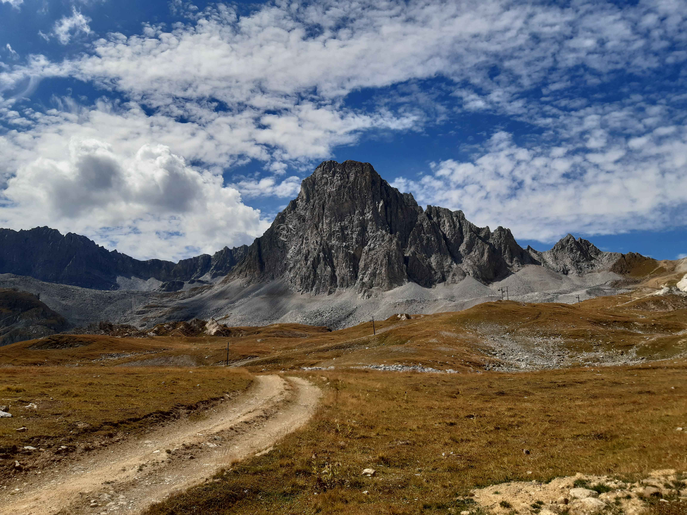

Description de l'itinéraire : la Saussaz - petit col des Encombres - grand Perron des Encombres
Distance : 8 km
Dénivelé positif : 900 m
Point le plus bas : 2090 m
Point le plus haut : 2824 m
Cotation en l'absence de neige : T3
Intérêt : 4/5
Date : 9/8/2021
Photos :
Vue depuis le Petit Col des Encombres, on distingue notamment le Grand Galibier et les plus hauts sommets des Écrins
Des bouquetins
Lac de la Partie
Type : boucle
Description de l'itinéraire : refuge de l'Orgère - lac de la Partie - Polset
Distance : 11 km
Dénivelé positif : 900 m
Point le plus bas : 1821 m
Point le plus haut : 2502 m
Cotation en l'absence de neige : T2
Intérêt : 3/5
Date : 10/8/2021
Photos :
Le lac de la Partie
Col du Fruit
Type : boucle
Description de l'itinéraire : plan du Vah - plan Mugnier - col de la Platta - col de Chanrouge - col du Fruit - plan du Marquis
Distance : 24 km
Dénivelé positif : 1500 m
Point le plus bas : 1828 m
Point le plus haut : 2539 m m
Cotation en l'absence de neige : T3
Intérêt : 3/5
Date : été 2019, en deux jours avec nuit au refuge du Saut
Photos : aucune
Cols de la Tourne et du Palet
Type : boucle
Description de l'itinéraire : Tignes le Lac - col de la Tourne - col du Palet
Distance : 11 km
Dénivelé positif : 800 m
Point le plus bas : 2085 m
Point le plus haut : 2656 m
Cotation en l'absence de neige : T2
Intérêt : 3/5
Date : 28/8/2022
Photos :
Une marmotte à proximité de Tignes le LacVue depuis le col de la Tourne Le plan de JaninLe lac de GrattaleuLe refuge du col de Palet Vue depuis le col du Palet, côté OuestVue depuis le col du Palet, côté Sud L'aiguille noire de Pramecou